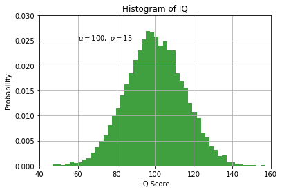

Intro to Numpy for Data Science#
IMQAV:#
Ingest
Model
Query
Analyse <– Numpy comes here
Visualise
Notes:#
Basic data strucuture in Numpy is an array.
import numpy as np
print (np.__version__)
1.20.2
Creating Numpy arrays using Python’s “array-like” data types#
my_list = [-17, 0, 4, 5, 9]
my_array_from_list = np.array(my_list)
my_array_from_list
array([-17, 0, 4, 5, 9])
my_array_from_list * 10
array([-170, 0, 40, 50, 90])
my_tuple = (14, -3.54, 5+7j)
np.array(my_tuple)
array([14. +0.j, -3.54+0.j, 5. +7.j])
my_tuple * 6
(14,
-3.54,
(5+7j),
14,
-3.54,
(5+7j),
14,
-3.54,
(5+7j),
14,
-3.54,
(5+7j),
14,
-3.54,
(5+7j),
14,
-3.54,
(5+7j))
np.array(my_tuple) * 6
# difference with python data structures!
array([ 84. +0.j, -21.24 +0.j, 30. +42.j])
Numpy array creation using intrinsic methods#
np.arange(7)
array([0, 1, 2, 3, 4, 5, 6])
np.arange(10, 23)
array([10, 11, 12, 13, 14, 15, 16, 17, 18, 19, 20, 21, 22])
np.arange(10, 23) -10
array([ 0, 1, 2, 3, 4, 5, 6, 7, 8, 9, 10, 11, 12])
np.arange(10, 23) -10 +1
array([ 1, 2, 3, 4, 5, 6, 7, 8, 9, 10, 11, 12, 13])
len(np.arange(10, 23))
13
my_range_array = np.arange(10, 23)
my_range_array.size
13
np.arange(10, 23, 5)
array([10, 15, 20])
np.arange(10, 26, 5)
array([10, 15, 20, 25])
np.arange(26, step=5)
array([ 0, 5, 10, 15, 20, 25])
np.arange(0, 26, step=5)
array([ 0, 5, 10, 15, 20, 25])
2D Arrays#
my_array= np.arange(35)
my_array.shape = (7,5)
my_array
array([[ 0, 1, 2, 3, 4],
[ 5, 6, 7, 8, 9],
[10, 11, 12, 13, 14],
[15, 16, 17, 18, 19],
[20, 21, 22, 23, 24],
[25, 26, 27, 28, 29],
[30, 31, 32, 33, 34]])
Slicing np arrays#
my_vector = np.array([-17, -4, 0, 2, 21, 37, 105])
my_vector[0]
-17
my_vector[0] = -102
my_vector
array([-102, -4, 0, 2, 21, 37, 105])
my_vector[-3]
21
my_vector[305]
---------------------------------------------------------------------------
IndexError Traceback (most recent call last)
<ipython-input-27-884a23cbea21> in <module>
----> 1 my_vector[305]
IndexError: index 305 is out of bounds for axis 0 with size 7
my_vector[305 % my_vector.size]
21
my_array= np.arange(35)
my_array.shape = (7,5)
my_array
array([[ 0, 1, 2, 3, 4],
[ 5, 6, 7, 8, 9],
[10, 11, 12, 13, 14],
[15, 16, 17, 18, 19],
[20, 21, 22, 23, 24],
[25, 26, 27, 28, 29],
[30, 31, 32, 33, 34]])
my_array[-2]
array([25, 26, 27, 28, 29])
my_array[5,2]
27
my_array[5][2]
27
Boolean Mask Arrays#
my_vector = np.array([-17, -4, 0, 2, 21, 37, 105])
my_vector
array([-17, -4, 0, 2, 21, 37, 105])
zero_mod_7_mask = 0 == (my_vector % 7)
zero_mod_7_mask
array([False, False, True, False, True, False, True])
sub_array = my_vector[zero_mod_7_mask]
sub_array
array([ 0, 21, 105])
sub_array[sub_array>0]
array([ 21, 105])
mod_test = 0 == (my_vector % 7)
mod_test
array([False, False, True, False, True, False, True])
positive_test = my_vector > 0
positive_test
array([False, False, False, True, True, True, True])
combined_mask = np.logical_and(mod_test, positive_test)
my_vector[combined_mask]
array([ 21, 105])
Broadcasting#
my_3D_array = np.arange(70)
my_3D_array.shape = (2,7,5)
my_3D_array
array([[[ 0, 1, 2, 3, 4],
[ 5, 6, 7, 8, 9],
[10, 11, 12, 13, 14],
[15, 16, 17, 18, 19],
[20, 21, 22, 23, 24],
[25, 26, 27, 28, 29],
[30, 31, 32, 33, 34]],
[[35, 36, 37, 38, 39],
[40, 41, 42, 43, 44],
[45, 46, 47, 48, 49],
[50, 51, 52, 53, 54],
[55, 56, 57, 58, 59],
[60, 61, 62, 63, 64],
[65, 66, 67, 68, 69]]])
# shape
my_3D_array.shape
(2, 7, 5)
# number of dimensions
my_3D_array.ndim
3
# size; number of elements
my_3D_array.size
70
# data type for each element
my_3D_array.dtype
dtype('int64')
5 * my_3D_array - 2
array([[[ -2, 3, 8, 13, 18],
[ 23, 28, 33, 38, 43],
[ 48, 53, 58, 63, 68],
[ 73, 78, 83, 88, 93],
[ 98, 103, 108, 113, 118],
[123, 128, 133, 138, 143],
[148, 153, 158, 163, 168]],
[[173, 178, 183, 188, 193],
[198, 203, 208, 213, 218],
[223, 228, 233, 238, 243],
[248, 253, 258, 263, 268],
[273, 278, 283, 288, 293],
[298, 303, 308, 313, 318],
[323, 328, 333, 338, 343]]])
left_mat = np.arange(6).reshape((2,3))
right_mat = np.arange(15).reshape((3,5))
np.inner(left_mat, right_mat)
---------------------------------------------------------------------------
ValueError Traceback (most recent call last)
<ipython-input-49-2fd2ab783eeb> in <module>
----> 1 np.inner(left_mat, right_mat)
<__array_function__ internals> in inner(*args, **kwargs)
ValueError: shapes (2,3) and (5,3) not aligned: 3 (dim 1) != 5 (dim 0)
np.dot(left_mat, right_mat)
array([[ 25, 28, 31, 34, 37],
[ 70, 82, 94, 106, 118]])
my_3D_array.sum()
2415
(69 * 70)/2
2415.0
Operations along axes#
my_3D_array.sum(axis=0)
array([[ 35, 37, 39, 41, 43],
[ 45, 47, 49, 51, 53],
[ 55, 57, 59, 61, 63],
[ 65, 67, 69, 71, 73],
[ 75, 77, 79, 81, 83],
[ 85, 87, 89, 91, 93],
[ 95, 97, 99, 101, 103]])
my_3D_array.sum(axis=1)
array([[105, 112, 119, 126, 133],
[350, 357, 364, 371, 378]])
my_3D_array.sum(axis=2)
array([[ 10, 35, 60, 85, 110, 135, 160],
[185, 210, 235, 260, 285, 310, 335]])
Ones#
my_2D_array = np.ones(35, dtype='int_').reshape((7,5)) * 3
my_2D_array
array([[3, 3, 3, 3, 3],
[3, 3, 3, 3, 3],
[3, 3, 3, 3, 3],
[3, 3, 3, 3, 3],
[3, 3, 3, 3, 3],
[3, 3, 3, 3, 3],
[3, 3, 3, 3, 3]])
Randoms#
my_random_2D_array = np.random.random((7,5))
np.set_printoptions(precision=4)
my_3D_array * my_random_2D_array
array([[[ 0. , 0.6753, 1.9135, 0.8421, 0.4798],
[ 2.8118, 1.5559, 6.1237, 1.7415, 6.7189],
[ 8.4301, 5.2604, 3.011 , 7.5058, 1.7924],
[14.372 , 11.064 , 3.0428, 3.2442, 1.1773],
[ 4.7817, 12.4966, 10.5114, 16.8946, 4.0792],
[18.6786, 2.3952, 5.8225, 7.1272, 10.1185],
[19.3078, 18.3304, 18.8438, 14.7543, 6.8081]],
[[34.1848, 24.3112, 35.3999, 10.6665, 4.6784],
[22.4941, 10.6319, 36.742 , 9.3607, 32.8479],
[37.9355, 21.998 , 11.793 , 27.7137, 6.2734],
[47.9066, 35.2664, 9.3073, 9.5523, 3.346 ],
[13.1497, 33.3244, 27.2341, 42.6038, 10.0281],
[44.8286, 5.6196, 13.3702, 16.0362, 22.3305],
[41.8336, 39.0261, 39.4541, 30.4027, 13.8164]]])
my_vector = np.arange(5) * 7
my_vector[0] = -1
my_vector
array([-1, 7, 14, 21, 28])
my_3D_array / my_vector
array([[[ -0. , 0.1429, 0.1429, 0.1429, 0.1429],
[ -5. , 0.8571, 0.5 , 0.381 , 0.3214],
[-10. , 1.5714, 0.8571, 0.619 , 0.5 ],
[-15. , 2.2857, 1.2143, 0.8571, 0.6786],
[-20. , 3. , 1.5714, 1.0952, 0.8571],
[-25. , 3.7143, 1.9286, 1.3333, 1.0357],
[-30. , 4.4286, 2.2857, 1.5714, 1.2143]],
[[-35. , 5.1429, 2.6429, 1.8095, 1.3929],
[-40. , 5.8571, 3. , 2.0476, 1.5714],
[-45. , 6.5714, 3.3571, 2.2857, 1.75 ],
[-50. , 7.2857, 3.7143, 2.5238, 1.9286],
[-55. , 8. , 4.0714, 2.7619, 2.1071],
[-60. , 8.7143, 4.4286, 3. , 2.2857],
[-65. , 9.4286, 4.7857, 3.2381, 2.4643]]])
my_3D_array % my_vector
array([[[ 0, 1, 2, 3, 4],
[ 0, 6, 7, 8, 9],
[ 0, 4, 12, 13, 14],
[ 0, 2, 3, 18, 19],
[ 0, 0, 8, 2, 24],
[ 0, 5, 13, 7, 1],
[ 0, 3, 4, 12, 6]],
[[ 0, 1, 9, 17, 11],
[ 0, 6, 0, 1, 16],
[ 0, 4, 5, 6, 21],
[ 0, 2, 10, 11, 26],
[ 0, 0, 1, 16, 3],
[ 0, 5, 6, 0, 8],
[ 0, 3, 11, 5, 13]]])
Structured arrays#
person_data_def = [('name','S6'),('height','f8'),('weight','f8'), ('age', 'i8')]
person_data_def
[('name', 'S6'), ('height', 'f8'), ('weight', 'f8'), ('age', 'i8')]
people_array = np.zeros((4,), dtype=person_data_def)
people_array
array([(b'', 0., 0., 0), (b'', 0., 0., 0), (b'', 0., 0., 0),
(b'', 0., 0., 0)],
dtype=[('name', 'S6'), ('height', '<f8'), ('weight', '<f8'), ('age', '<i8')])
people_array[3] = ('Delta', 73, 205, 34)
people_array[0] = ('Alpha', 65, 112, 23)
people_array
array([(b'Alpha', 65., 112., 23), (b'', 0., 0., 0),
(b'', 0., 0., 0), (b'Delta', 73., 205., 34)],
dtype=[('name', 'S6'), ('height', '<f8'), ('weight', '<f8'), ('age', '<i8')])
people_array[0:]
array([(b'Alpha', 65., 112., 23), (b'', 0., 0., 0),
(b'', 0., 0., 0), (b'Delta', 73., 205., 34)],
dtype=[('name', 'S6'), ('height', '<f8'), ('weight', '<f8'), ('age', '<i8')])
ages = people_array['age']
ages
array([23, 0, 0, 34])
make_youthful = ages / 2
make_youthful
array([11.5, 0. , 0. , 17. ])
people_big_array = np.zeros((4,3,2), dtype=person_data_def)
people_big_array
array([[[(b'', 0., 0., 0), (b'', 0., 0., 0)],
[(b'', 0., 0., 0), (b'', 0., 0., 0)],
[(b'', 0., 0., 0), (b'', 0., 0., 0)]],
[[(b'', 0., 0., 0), (b'', 0., 0., 0)],
[(b'', 0., 0., 0), (b'', 0., 0., 0)],
[(b'', 0., 0., 0), (b'', 0., 0., 0)]],
[[(b'', 0., 0., 0), (b'', 0., 0., 0)],
[(b'', 0., 0., 0), (b'', 0., 0., 0)],
[(b'', 0., 0., 0), (b'', 0., 0., 0)]],
[[(b'', 0., 0., 0), (b'', 0., 0., 0)],
[(b'', 0., 0., 0), (b'', 0., 0., 0)],
[(b'', 0., 0., 0), (b'', 0., 0., 0)]]],
dtype=[('name', 'S6'), ('height', '<f8'), ('weight', '<f8'), ('age', '<i8')])
people_big_array[3,2,1] = ('Echo', 68, 155, 46)
people_big_array
array([[[(b'', 0., 0., 0), (b'', 0., 0., 0)],
[(b'', 0., 0., 0), (b'', 0., 0., 0)],
[(b'', 0., 0., 0), (b'', 0., 0., 0)]],
[[(b'', 0., 0., 0), (b'', 0., 0., 0)],
[(b'', 0., 0., 0), (b'', 0., 0., 0)],
[(b'', 0., 0., 0), (b'', 0., 0., 0)]],
[[(b'', 0., 0., 0), (b'', 0., 0., 0)],
[(b'', 0., 0., 0), (b'', 0., 0., 0)],
[(b'', 0., 0., 0), (b'', 0., 0., 0)]],
[[(b'', 0., 0., 0), (b'', 0., 0., 0)],
[(b'', 0., 0., 0), (b'', 0., 0., 0)],
[(b'', 0., 0., 0), (b'Echo', 68., 155., 46)]]],
dtype=[('name', 'S6'), ('height', '<f8'), ('weight', '<f8'), ('age', '<i8')])
people_big_array['height']
array([[[ 0., 0.],
[ 0., 0.],
[ 0., 0.]],
[[ 0., 0.],
[ 0., 0.],
[ 0., 0.]],
[[ 0., 0.],
[ 0., 0.],
[ 0., 0.]],
[[ 0., 0.],
[ 0., 0.],
[ 0., 68.]]])
people_big_array[['height', 'weight']]
array([[[( 0., 0.), ( 0., 0.)],
[( 0., 0.), ( 0., 0.)],
[( 0., 0.), ( 0., 0.)]],
[[( 0., 0.), ( 0., 0.)],
[( 0., 0.), ( 0., 0.)],
[( 0., 0.), ( 0., 0.)]],
[[( 0., 0.), ( 0., 0.)],
[( 0., 0.), ( 0., 0.)],
[( 0., 0.), ( 0., 0.)]],
[[( 0., 0.), ( 0., 0.)],
[( 0., 0.), ( 0., 0.)],
[( 0., 0.), (68., 155.)]]],
dtype={'names':['height','weight'], 'formats':['<f8','<f8'], 'offsets':[6,14], 'itemsize':30})
Creating record arrays#
person_record_array = np.rec.array([('Delta', 73, 205, 34),('Alpha', 65, 112, 23)],dtype=person_data_def)
person_record_array
rec.array([(b'Delta', 73., 205., 34), (b'Alpha', 65., 112., 23)],
dtype=[('name', 'S6'), ('height', '<f8'), ('weight', '<f8'), ('age', '<i8')])
person_record_array[0].age
34
Views and Copies#
mi_casa = np.array([-45, -31, -12, 0, 2, 25, 51, 99])
su_casa = mi_casa
#reference equality
mi_casa is su_casa
True
id(mi_casa)
140727158182992
id(su_casa)
140727158182992
#value inequality
mi_casa == su_casa
array([ True, True, True, True, True, True, True, True])
su_casa[4] = 1010
su_casa
array([ -45, -31, -12, 0, 1010, 25, 51, 99])
mi_casa
array([ -45, -31, -12, 0, 1010, 25, 51, 99])
tree_house = np.array([-45, -31, -12, 0, 2, 25, 51, 99])
tree_house == mi_casa
array([ True, True, True, True, False, True, True, True])
id(tree_house)
140727158214704
tree_house[0] = 214
tree_house
array([214, -31, -12, 0, 2, 25, 51, 99])
tree_house is mi_casa
False
View: a shallow copy#
farm_house = tree_house.view()
farm_house.shape = (2,4)
tree_house
array([214, -31, -12, 0, 2, 25, 51, 99])
farm_house
array([[214, -31, -12, 0],
[ 2, 25, 51, 99]])
tree_house [3] = -111
farm_house
array([[ 214, -31, -12, -111],
[ 2, 25, 51, 99]])
Deep copy#
dog_house = np.copy(tree_house)
dog_house[0] = -121
dog_house
array([-121, -31, -12, -111, 2, 25, 51, 99])
tree_house
array([ 214, -31, -12, -111, 2, 25, 51, 99])
Attributes#
a = np.arange(24).reshape((2,3,4))
a
array([[[ 0, 1, 2, 3],
[ 4, 5, 6, 7],
[ 8, 9, 10, 11]],
[[12, 13, 14, 15],
[16, 17, 18, 19],
[20, 21, 22, 23]]])
a.ndim
3
a.shape
(2, 3, 4)
a.dtype
dtype('int64')
a.size
24
a.itemsize
8
type(a)
numpy.ndarray
Adding/Removing elements from Numpy Arrays#
append
horizontal stacking
vertical stacking
insert
delete
a = np.array(np.arange(24)).reshape(2,3,4)
a
array([[[ 0, 1, 2, 3],
[ 4, 5, 6, 7],
[ 8, 9, 10, 11]],
[[12, 13, 14, 15],
[16, 17, 18, 19],
[20, 21, 22, 23]]])
b=np.append(a, [5,6,7,8])
b
array([ 0, 1, 2, 3, 4, 5, 6, 7, 8, 9, 10, 11, 12, 13, 14, 15, 16,
17, 18, 19, 20, 21, 22, 23, 5, 6, 7, 8])
b.shape
(28,)
b.reshape((7,4))
array([[ 0, 1, 2, 3],
[ 4, 5, 6, 7],
[ 8, 9, 10, 11],
[12, 13, 14, 15],
[16, 17, 18, 19],
[20, 21, 22, 23],
[ 5, 6, 7, 8]])
c = np.array(np.arange(24)).reshape(2,3,4) * 10 + 3
c
array([[[ 3, 13, 23, 33],
[ 43, 53, 63, 73],
[ 83, 93, 103, 113]],
[[123, 133, 143, 153],
[163, 173, 183, 193],
[203, 213, 223, 233]]])
np.append(a,c, axis=0)
array([[[ 0, 1, 2, 3],
[ 4, 5, 6, 7],
[ 8, 9, 10, 11]],
[[ 12, 13, 14, 15],
[ 16, 17, 18, 19],
[ 20, 21, 22, 23]],
[[ 3, 13, 23, 33],
[ 43, 53, 63, 73],
[ 83, 93, 103, 113]],
[[123, 133, 143, 153],
[163, 173, 183, 193],
[203, 213, 223, 233]]])
np.append(a,c, axis=0).shape
(4, 3, 4)
np.append(a,c, axis=1)
array([[[ 0, 1, 2, 3],
[ 4, 5, 6, 7],
[ 8, 9, 10, 11],
[ 3, 13, 23, 33],
[ 43, 53, 63, 73],
[ 83, 93, 103, 113]],
[[ 12, 13, 14, 15],
[ 16, 17, 18, 19],
[ 20, 21, 22, 23],
[123, 133, 143, 153],
[163, 173, 183, 193],
[203, 213, 223, 233]]])
np.append(a,c, axis=1).shape
(2, 6, 4)
np.append(a,c, axis=2)
array([[[ 0, 1, 2, 3, 3, 13, 23, 33],
[ 4, 5, 6, 7, 43, 53, 63, 73],
[ 8, 9, 10, 11, 83, 93, 103, 113]],
[[ 12, 13, 14, 15, 123, 133, 143, 153],
[ 16, 17, 18, 19, 163, 173, 183, 193],
[ 20, 21, 22, 23, 203, 213, 223, 233]]])
np.append(a,c, axis=2).shape
(2, 3, 8)
# horizontal stack
my_hay_stack = np.hstack((a,c))
my_hay_stack
array([[[ 0, 1, 2, 3],
[ 4, 5, 6, 7],
[ 8, 9, 10, 11],
[ 3, 13, 23, 33],
[ 43, 53, 63, 73],
[ 83, 93, 103, 113]],
[[ 12, 13, 14, 15],
[ 16, 17, 18, 19],
[ 20, 21, 22, 23],
[123, 133, 143, 153],
[163, 173, 183, 193],
[203, 213, 223, 233]]])
my_hay_stack[0,0,2] = 999
my_hay_stack
array([[[ 0, 1, 999, 3],
[ 4, 5, 6, 7],
[ 8, 9, 10, 11],
[ 3, 13, 23, 33],
[ 43, 53, 63, 73],
[ 83, 93, 103, 113]],
[[ 12, 13, 14, 15],
[ 16, 17, 18, 19],
[ 20, 21, 22, 23],
[123, 133, 143, 153],
[163, 173, 183, 193],
[203, 213, 223, 233]]])
after_insert_array = np.insert(c, 1, 444, axis=0)
after_insert_array
array([[[ 3, 13, 23, 33],
[ 43, 53, 63, 73],
[ 83, 93, 103, 113]],
[[444, 444, 444, 444],
[444, 444, 444, 444],
[444, 444, 444, 444]],
[[123, 133, 143, 153],
[163, 173, 183, 193],
[203, 213, 223, 233]]])
np.insert (c, 1, 444, axis=1)
array([[[ 3, 13, 23, 33],
[444, 444, 444, 444],
[ 43, 53, 63, 73],
[ 83, 93, 103, 113]],
[[123, 133, 143, 153],
[444, 444, 444, 444],
[163, 173, 183, 193],
[203, 213, 223, 233]]])
np.insert (c, 1, 444, axis=2)
array([[[ 3, 444, 13, 23, 33],
[ 43, 444, 53, 63, 73],
[ 83, 444, 93, 103, 113]],
[[123, 444, 133, 143, 153],
[163, 444, 173, 183, 193],
[203, 444, 213, 223, 233]]])
d = np.empty(c.shape)
np.copyto(d, c)
d
array([[[ 3., 13., 23., 33.],
[ 43., 53., 63., 73.],
[ 83., 93., 103., 113.]],
[[123., 133., 143., 153.],
[163., 173., 183., 193.],
[203., 213., 223., 233.]]])
np.delete(d, 1, axis=0)
array([[[ 3., 13., 23., 33.],
[ 43., 53., 63., 73.],
[ 83., 93., 103., 113.]]])
np.delete(d, 1, axis=1)
array([[[ 3., 13., 23., 33.],
[ 83., 93., 103., 113.]],
[[123., 133., 143., 153.],
[203., 213., 223., 233.]]])
np.delete(d, 1, axis=2)
array([[[ 3., 23., 33.],
[ 43., 63., 73.],
[ 83., 103., 113.]],
[[123., 143., 153.],
[163., 183., 193.],
[203., 223., 233.]]])
Joining and Splitting arrays#
concatenate
stack
split
a = np.array([[1, 2], [3, 4]])
b = np.array([[5, 6]])
a
array([[1, 2],
[3, 4]])
concatenate#
together = np.concatenate((a, b), axis=0)
together
array([[1, 2],
[3, 4],
[5, 6]])
together.shape
(3, 2)
together[1,1] = 555
together
array([[ 1, 2],
[ 3, 555],
[ 5, 6]])
c = np.array([[1, 2], [3, 4]]) *3 + 5
c
array([[ 8, 11],
[14, 17]])
np.concatenate((a, c), axis=1)
array([[ 1, 2, 8, 11],
[ 3, 4, 14, 17]])
stack#
arrays = np.zeros((5,3,4))
for n in range(5):
arrays[n] = np.random.randn(3, 4)
arrays
array([[[-3.8933e-01, -9.1311e-01, 1.0644e+00, -1.8486e-01],
[-1.0559e+00, -2.2949e-01, -2.6113e+00, -1.4984e+00],
[-4.4875e-01, 7.1040e-01, 1.5167e+00, 5.5691e-01]],
[[-1.8662e-01, -3.8291e-01, 5.1992e-01, -7.8166e-01],
[-1.2538e+00, -7.4568e-01, 2.3441e-02, -7.9425e-01],
[ 1.2223e+00, -3.3145e-01, 7.7641e-01, -1.2362e+00]],
[[ 9.5904e-01, 2.5921e-01, -2.3689e-01, 5.3772e-01],
[-4.7221e-01, 2.8145e-01, 4.5964e-01, -9.0059e-01],
[ 1.2910e-01, 1.1142e+00, 4.1537e-01, -3.8124e-01]],
[[ 2.2664e-01, 9.2765e-01, 5.6888e-01, -1.6347e+00],
[ 1.1936e-01, 9.6489e-03, 1.6844e+00, 3.4236e-01],
[ 1.4337e+00, -1.1671e+00, 9.1469e-01, -1.1402e+00]],
[[ 1.9306e+00, 2.3486e-01, 5.5647e-01, -2.5228e-03],
[-4.2198e-01, -3.4022e-01, -4.9150e-01, -6.3531e-01],
[-6.1108e-01, -6.7772e-01, -1.5080e+00, 1.1042e+00]]])
stack0 = np.stack(arrays, axis=0)
stack1 = np.stack(arrays, axis=1)
stack2 = np.stack(arrays, axis=2)
my_stacks = np.array([stack0.shape, stack1.shape, stack2.shape])
my_stacks
array([[5, 3, 4],
[3, 5, 4],
[3, 4, 5]])
stack0
array([[[-3.8933e-01, -9.1311e-01, 1.0644e+00, -1.8486e-01],
[-1.0559e+00, -2.2949e-01, -2.6113e+00, -1.4984e+00],
[-4.4875e-01, 7.1040e-01, 1.5167e+00, 5.5691e-01]],
[[-1.8662e-01, -3.8291e-01, 5.1992e-01, -7.8166e-01],
[-1.2538e+00, -7.4568e-01, 2.3441e-02, -7.9425e-01],
[ 1.2223e+00, -3.3145e-01, 7.7641e-01, -1.2362e+00]],
[[ 9.5904e-01, 2.5921e-01, -2.3689e-01, 5.3772e-01],
[-4.7221e-01, 2.8145e-01, 4.5964e-01, -9.0059e-01],
[ 1.2910e-01, 1.1142e+00, 4.1537e-01, -3.8124e-01]],
[[ 2.2664e-01, 9.2765e-01, 5.6888e-01, -1.6347e+00],
[ 1.1936e-01, 9.6489e-03, 1.6844e+00, 3.4236e-01],
[ 1.4337e+00, -1.1671e+00, 9.1469e-01, -1.1402e+00]],
[[ 1.9306e+00, 2.3486e-01, 5.5647e-01, -2.5228e-03],
[-4.2198e-01, -3.4022e-01, -4.9150e-01, -6.3531e-01],
[-6.1108e-01, -6.7772e-01, -1.5080e+00, 1.1042e+00]]])
stack1
array([[[-3.8933e-01, -9.1311e-01, 1.0644e+00, -1.8486e-01],
[-1.8662e-01, -3.8291e-01, 5.1992e-01, -7.8166e-01],
[ 9.5904e-01, 2.5921e-01, -2.3689e-01, 5.3772e-01],
[ 2.2664e-01, 9.2765e-01, 5.6888e-01, -1.6347e+00],
[ 1.9306e+00, 2.3486e-01, 5.5647e-01, -2.5228e-03]],
[[-1.0559e+00, -2.2949e-01, -2.6113e+00, -1.4984e+00],
[-1.2538e+00, -7.4568e-01, 2.3441e-02, -7.9425e-01],
[-4.7221e-01, 2.8145e-01, 4.5964e-01, -9.0059e-01],
[ 1.1936e-01, 9.6489e-03, 1.6844e+00, 3.4236e-01],
[-4.2198e-01, -3.4022e-01, -4.9150e-01, -6.3531e-01]],
[[-4.4875e-01, 7.1040e-01, 1.5167e+00, 5.5691e-01],
[ 1.2223e+00, -3.3145e-01, 7.7641e-01, -1.2362e+00],
[ 1.2910e-01, 1.1142e+00, 4.1537e-01, -3.8124e-01],
[ 1.4337e+00, -1.1671e+00, 9.1469e-01, -1.1402e+00],
[-6.1108e-01, -6.7772e-01, -1.5080e+00, 1.1042e+00]]])
stack2
array([[[-3.8933e-01, -1.8662e-01, 9.5904e-01, 2.2664e-01,
1.9306e+00],
[-9.1311e-01, -3.8291e-01, 2.5921e-01, 9.2765e-01,
2.3486e-01],
[ 1.0644e+00, 5.1992e-01, -2.3689e-01, 5.6888e-01,
5.5647e-01],
[-1.8486e-01, -7.8166e-01, 5.3772e-01, -1.6347e+00,
-2.5228e-03]],
[[-1.0559e+00, -1.2538e+00, -4.7221e-01, 1.1936e-01,
-4.2198e-01],
[-2.2949e-01, -7.4568e-01, 2.8145e-01, 9.6489e-03,
-3.4022e-01],
[-2.6113e+00, 2.3441e-02, 4.5964e-01, 1.6844e+00,
-4.9150e-01],
[-1.4984e+00, -7.9425e-01, -9.0059e-01, 3.4236e-01,
-6.3531e-01]],
[[-4.4875e-01, 1.2223e+00, 1.2910e-01, 1.4337e+00,
-6.1108e-01],
[ 7.1040e-01, -3.3145e-01, 1.1142e+00, -1.1671e+00,
-6.7772e-01],
[ 1.5167e+00, 7.7641e-01, 4.1537e-01, 9.1469e-01,
-1.5080e+00],
[ 5.5691e-01, -1.2362e+00, -3.8124e-01, -1.1402e+00,
1.1042e+00]]])
split#
temp = np.arange(5)
np.split(temp,1)
[array([0, 1, 2, 3, 4])]
before_split = stack0
before_split.shape
(5, 3, 4)
s0=np.split (before_split, 5, axis=0)
s0
[array([[[-0.3893, -0.9131, 1.0644, -0.1849],
[-1.0559, -0.2295, -2.6113, -1.4984],
[-0.4487, 0.7104, 1.5167, 0.5569]]]),
array([[[-0.1866, -0.3829, 0.5199, -0.7817],
[-1.2538, -0.7457, 0.0234, -0.7942],
[ 1.2223, -0.3314, 0.7764, -1.2362]]]),
array([[[ 0.959 , 0.2592, -0.2369, 0.5377],
[-0.4722, 0.2814, 0.4596, -0.9006],
[ 0.1291, 1.1142, 0.4154, -0.3812]]]),
array([[[ 0.2266, 0.9277, 0.5689, -1.6347],
[ 0.1194, 0.0096, 1.6844, 0.3424],
[ 1.4337, -1.1671, 0.9147, -1.1402]]]),
array([[[ 1.9306, 0.2349, 0.5565, -0.0025],
[-0.422 , -0.3402, -0.4915, -0.6353],
[-0.6111, -0.6777, -1.508 , 1.1042]]])]
type(s0)
list
s0[1]
array([[[-0.1866, -0.3829, 0.5199, -0.7817],
[-1.2538, -0.7457, 0.0234, -0.7942],
[ 1.2223, -0.3314, 0.7764, -1.2362]]])
s0[1].shape
(1, 3, 4)
s1=np.split (before_split, 3, axis=1)
s1
[array([[[-0.3893, -0.9131, 1.0644, -0.1849]],
[[-0.1866, -0.3829, 0.5199, -0.7817]],
[[ 0.959 , 0.2592, -0.2369, 0.5377]],
[[ 0.2266, 0.9277, 0.5689, -1.6347]],
[[ 1.9306, 0.2349, 0.5565, -0.0025]]]),
array([[[-1.0559, -0.2295, -2.6113, -1.4984]],
[[-1.2538, -0.7457, 0.0234, -0.7942]],
[[-0.4722, 0.2814, 0.4596, -0.9006]],
[[ 0.1194, 0.0096, 1.6844, 0.3424]],
[[-0.422 , -0.3402, -0.4915, -0.6353]]]),
array([[[-0.4487, 0.7104, 1.5167, 0.5569]],
[[ 1.2223, -0.3314, 0.7764, -1.2362]],
[[ 0.1291, 1.1142, 0.4154, -0.3812]],
[[ 1.4337, -1.1671, 0.9147, -1.1402]],
[[-0.6111, -0.6777, -1.508 , 1.1042]]])]
s2=np.split (before_split, 4, axis=2)
s2
[array([[[-0.3893],
[-1.0559],
[-0.4487]],
[[-0.1866],
[-1.2538],
[ 1.2223]],
[[ 0.959 ],
[-0.4722],
[ 0.1291]],
[[ 0.2266],
[ 0.1194],
[ 1.4337]],
[[ 1.9306],
[-0.422 ],
[-0.6111]]]),
array([[[-0.9131],
[-0.2295],
[ 0.7104]],
[[-0.3829],
[-0.7457],
[-0.3314]],
[[ 0.2592],
[ 0.2814],
[ 1.1142]],
[[ 0.9277],
[ 0.0096],
[-1.1671]],
[[ 0.2349],
[-0.3402],
[-0.6777]]]),
array([[[ 1.0644],
[-2.6113],
[ 1.5167]],
[[ 0.5199],
[ 0.0234],
[ 0.7764]],
[[-0.2369],
[ 0.4596],
[ 0.4154]],
[[ 0.5689],
[ 1.6844],
[ 0.9147]],
[[ 0.5565],
[-0.4915],
[-1.508 ]]]),
array([[[-0.1849],
[-1.4984],
[ 0.5569]],
[[-0.7817],
[-0.7942],
[-1.2362]],
[[ 0.5377],
[-0.9006],
[-0.3812]],
[[-1.6347],
[ 0.3424],
[-1.1402]],
[[-0.0025],
[-0.6353],
[ 1.1042]]])]
Ravel and flat#
a = np.array(np.arange(24)).reshape(2,3,4)
a
array([[[ 0, 1, 2, 3],
[ 4, 5, 6, 7],
[ 8, 9, 10, 11]],
[[12, 13, 14, 15],
[16, 17, 18, 19],
[20, 21, 22, 23]]])
a.flat
<numpy.flatiter at 0x7ffd758fea00>
a.ravel()
array([ 0, 1, 2, 3, 4, 5, 6, 7, 8, 9, 10, 11, 12, 13, 14, 15, 16,
17, 18, 19, 20, 21, 22, 23])
[i for i in a.flat]
[0,
1,
2,
3,
4,
5,
6,
7,
8,
9,
10,
11,
12,
13,
14,
15,
16,
17,
18,
19,
20,
21,
22,
23]
Rearranging array elements#
my_start_array = np.array(np.arange(24))
my_3_8_array = my_start_array.reshape((3,8))
my_2_3_4_array = my_3_8_array.reshape((2,3,4))
my_3_8_array
array([[ 0, 1, 2, 3, 4, 5, 6, 7],
[ 8, 9, 10, 11, 12, 13, 14, 15],
[16, 17, 18, 19, 20, 21, 22, 23]])
np.fliplr(my_3_8_array)
array([[ 7, 6, 5, 4, 3, 2, 1, 0],
[15, 14, 13, 12, 11, 10, 9, 8],
[23, 22, 21, 20, 19, 18, 17, 16]])
my_2_3_4_array
array([[[ 0, 1, 2, 3],
[ 4, 5, 6, 7],
[ 8, 9, 10, 11]],
[[12, 13, 14, 15],
[16, 17, 18, 19],
[20, 21, 22, 23]]])
np.fliplr(my_2_3_4_array)
array([[[ 8, 9, 10, 11],
[ 4, 5, 6, 7],
[ 0, 1, 2, 3]],
[[20, 21, 22, 23],
[16, 17, 18, 19],
[12, 13, 14, 15]]])
np.flipud(my_3_8_array)
array([[16, 17, 18, 19, 20, 21, 22, 23],
[ 8, 9, 10, 11, 12, 13, 14, 15],
[ 0, 1, 2, 3, 4, 5, 6, 7]])
np.flipud(my_2_3_4_array)
array([[[12, 13, 14, 15],
[16, 17, 18, 19],
[20, 21, 22, 23]],
[[ 0, 1, 2, 3],
[ 4, 5, 6, 7],
[ 8, 9, 10, 11]]])
my_start_array
array([ 0, 1, 2, 3, 4, 5, 6, 7, 8, 9, 10, 11, 12, 13, 14, 15, 16,
17, 18, 19, 20, 21, 22, 23])
np.roll(my_start_array, 5)
array([19, 20, 21, 22, 23, 0, 1, 2, 3, 4, 5, 6, 7, 8, 9, 10, 11,
12, 13, 14, 15, 16, 17, 18])
np.roll(my_start_array, -5)
array([ 5, 6, 7, 8, 9, 10, 11, 12, 13, 14, 15, 16, 17, 18, 19, 20, 21,
22, 23, 0, 1, 2, 3, 4])
np.roll(my_2_3_4_array, 2)
array([[[22, 23, 0, 1],
[ 2, 3, 4, 5],
[ 6, 7, 8, 9]],
[[10, 11, 12, 13],
[14, 15, 16, 17],
[18, 19, 20, 21]]])
np.roll(my_2_3_4_array, -2)
array([[[ 2, 3, 4, 5],
[ 6, 7, 8, 9],
[10, 11, 12, 13]],
[[14, 15, 16, 17],
[18, 19, 20, 21],
[22, 23, 0, 1]]])
my_3_8_array
array([[ 0, 1, 2, 3, 4, 5, 6, 7],
[ 8, 9, 10, 11, 12, 13, 14, 15],
[16, 17, 18, 19, 20, 21, 22, 23]])
np.rot90(my_3_8_array)
array([[ 7, 15, 23],
[ 6, 14, 22],
[ 5, 13, 21],
[ 4, 12, 20],
[ 3, 11, 19],
[ 2, 10, 18],
[ 1, 9, 17],
[ 0, 8, 16]])
np.rot90(my_3_8_array, k=-1)
array([[16, 8, 0],
[17, 9, 1],
[18, 10, 2],
[19, 11, 3],
[20, 12, 4],
[21, 13, 5],
[22, 14, 6],
[23, 15, 7]])
Transponse like operations#
transpose
swapaxes
rollaxes
my_start_array = np.array(np.arange(24))
my_3_8_array = my_start_array.reshape((3,8))
my_2_3_4_array = my_3_8_array.reshape((2,3,4))
my_start_array
array([ 0, 1, 2, 3, 4, 5, 6, 7, 8, 9, 10, 11, 12, 13, 14, 15, 16,
17, 18, 19, 20, 21, 22, 23])
transpose#
# 1D no change
np.transpose(my_start_array)
array([ 0, 1, 2, 3, 4, 5, 6, 7, 8, 9, 10, 11, 12, 13, 14, 15, 16,
17, 18, 19, 20, 21, 22, 23])
my_3_8_array
array([[ 0, 1, 2, 3, 4, 5, 6, 7],
[ 8, 9, 10, 11, 12, 13, 14, 15],
[16, 17, 18, 19, 20, 21, 22, 23]])
# 2D: exchange rows and columns (a[i,j] becomes a[j,i])
np.transpose(my_3_8_array)
array([[ 0, 8, 16],
[ 1, 9, 17],
[ 2, 10, 18],
[ 3, 11, 19],
[ 4, 12, 20],
[ 5, 13, 21],
[ 6, 14, 22],
[ 7, 15, 23]])
my_2_3_4_array
array([[[ 0, 1, 2, 3],
[ 4, 5, 6, 7],
[ 8, 9, 10, 11]],
[[12, 13, 14, 15],
[16, 17, 18, 19],
[20, 21, 22, 23]]])
# 3D: use axes parameter
np.transpose(my_2_3_4_array, axes=(0,2,1))
array([[[ 0, 4, 8],
[ 1, 5, 9],
[ 2, 6, 10],
[ 3, 7, 11]],
[[12, 16, 20],
[13, 17, 21],
[14, 18, 22],
[15, 19, 23]]])
np.transpose(my_2_3_4_array, axes=(2,1,0))
array([[[ 0, 12],
[ 4, 16],
[ 8, 20]],
[[ 1, 13],
[ 5, 17],
[ 9, 21]],
[[ 2, 14],
[ 6, 18],
[10, 22]],
[[ 3, 15],
[ 7, 19],
[11, 23]]])
swapaxes#
np.swapaxes(my_2_3_4_array, 1, 0)
array([[[ 0, 1, 2, 3],
[12, 13, 14, 15]],
[[ 4, 5, 6, 7],
[16, 17, 18, 19]],
[[ 8, 9, 10, 11],
[20, 21, 22, 23]]])
my_2_3_4_array
array([[[ 0, 1, 2, 3],
[ 4, 5, 6, 7],
[ 8, 9, 10, 11]],
[[12, 13, 14, 15],
[16, 17, 18, 19],
[20, 21, 22, 23]]])
np.swapaxes(my_2_3_4_array, 1, 0).shape
(3, 2, 4)
np.swapaxes(my_2_3_4_array, 2, 1)
array([[[ 0, 4, 8],
[ 1, 5, 9],
[ 2, 6, 10],
[ 3, 7, 11]],
[[12, 16, 20],
[13, 17, 21],
[14, 18, 22],
[15, 19, 23]]])
np.swapaxes(my_2_3_4_array, 2, 0)
array([[[ 0, 12],
[ 4, 16],
[ 8, 20]],
[[ 1, 13],
[ 5, 17],
[ 9, 21]],
[[ 2, 14],
[ 6, 18],
[10, 22]],
[[ 3, 15],
[ 7, 19],
[11, 23]]])
rollaxes#
my_2_3_4_array
array([[[ 0, 1, 2, 3],
[ 4, 5, 6, 7],
[ 8, 9, 10, 11]],
[[12, 13, 14, 15],
[16, 17, 18, 19],
[20, 21, 22, 23]]])
np.rollaxis(my_2_3_4_array, 0, 2)
array([[[ 0, 1, 2, 3],
[12, 13, 14, 15]],
[[ 4, 5, 6, 7],
[16, 17, 18, 19]],
[[ 8, 9, 10, 11],
[20, 21, 22, 23]]])
np.rollaxis(my_2_3_4_array, 0, 2).shape
(3, 2, 4)
Tiling arrays#
my_start_array = np.array(np.arange(12))
my_start_array
array([ 0, 1, 2, 3, 4, 5, 6, 7, 8, 9, 10, 11])
np.tile(my_start_array, 3)
array([ 0, 1, 2, 3, 4, 5, 6, 7, 8, 9, 10, 11, 0, 1, 2, 3, 4,
5, 6, 7, 8, 9, 10, 11, 0, 1, 2, 3, 4, 5, 6, 7, 8, 9,
10, 11])
np.tile(my_start_array, 3).reshape((3,12))
array([[ 0, 1, 2, 3, 4, 5, 6, 7, 8, 9, 10, 11],
[ 0, 1, 2, 3, 4, 5, 6, 7, 8, 9, 10, 11],
[ 0, 1, 2, 3, 4, 5, 6, 7, 8, 9, 10, 11]])
my_second_array = np.array(np.arange(7))
my_second_array
array([0, 1, 2, 3, 4, 5, 6])
tile_1 = np.tile(my_second_array, (3, 1))
tile_1
array([[0, 1, 2, 3, 4, 5, 6],
[0, 1, 2, 3, 4, 5, 6],
[0, 1, 2, 3, 4, 5, 6]])
tile_2 = np.tile(tile_1, (2,2))
tile_2
array([[0, 1, 2, 3, 4, 5, 6, 0, 1, 2, 3, 4, 5, 6],
[0, 1, 2, 3, 4, 5, 6, 0, 1, 2, 3, 4, 5, 6],
[0, 1, 2, 3, 4, 5, 6, 0, 1, 2, 3, 4, 5, 6],
[0, 1, 2, 3, 4, 5, 6, 0, 1, 2, 3, 4, 5, 6],
[0, 1, 2, 3, 4, 5, 6, 0, 1, 2, 3, 4, 5, 6],
[0, 1, 2, 3, 4, 5, 6, 0, 1, 2, 3, 4, 5, 6]])
tile_3 = np.tile(tile_2, (3,1))
tile_3
array([[0, 1, 2, 3, 4, 5, 6, 0, 1, 2, 3, 4, 5, 6],
[0, 1, 2, 3, 4, 5, 6, 0, 1, 2, 3, 4, 5, 6],
[0, 1, 2, 3, 4, 5, 6, 0, 1, 2, 3, 4, 5, 6],
[0, 1, 2, 3, 4, 5, 6, 0, 1, 2, 3, 4, 5, 6],
[0, 1, 2, 3, 4, 5, 6, 0, 1, 2, 3, 4, 5, 6],
[0, 1, 2, 3, 4, 5, 6, 0, 1, 2, 3, 4, 5, 6],
[0, 1, 2, 3, 4, 5, 6, 0, 1, 2, 3, 4, 5, 6],
[0, 1, 2, 3, 4, 5, 6, 0, 1, 2, 3, 4, 5, 6],
[0, 1, 2, 3, 4, 5, 6, 0, 1, 2, 3, 4, 5, 6],
[0, 1, 2, 3, 4, 5, 6, 0, 1, 2, 3, 4, 5, 6],
[0, 1, 2, 3, 4, 5, 6, 0, 1, 2, 3, 4, 5, 6],
[0, 1, 2, 3, 4, 5, 6, 0, 1, 2, 3, 4, 5, 6],
[0, 1, 2, 3, 4, 5, 6, 0, 1, 2, 3, 4, 5, 6],
[0, 1, 2, 3, 4, 5, 6, 0, 1, 2, 3, 4, 5, 6],
[0, 1, 2, 3, 4, 5, 6, 0, 1, 2, 3, 4, 5, 6],
[0, 1, 2, 3, 4, 5, 6, 0, 1, 2, 3, 4, 5, 6],
[0, 1, 2, 3, 4, 5, 6, 0, 1, 2, 3, 4, 5, 6],
[0, 1, 2, 3, 4, 5, 6, 0, 1, 2, 3, 4, 5, 6]])
my_second_array
array([0, 1, 2, 3, 4, 5, 6])
np.repeat(my_second_array, 3)
array([0, 0, 0, 1, 1, 1, 2, 2, 2, 3, 3, 3, 4, 4, 4, 5, 5, 5, 6, 6, 6])
my_repeatable_array = np.array(np.arange(24)).reshape(2,3,4)
my_repeatable_array
array([[[ 0, 1, 2, 3],
[ 4, 5, 6, 7],
[ 8, 9, 10, 11]],
[[12, 13, 14, 15],
[16, 17, 18, 19],
[20, 21, 22, 23]]])
np.repeat(my_repeatable_array, 2, axis=0)
array([[[ 0, 1, 2, 3],
[ 4, 5, 6, 7],
[ 8, 9, 10, 11]],
[[ 0, 1, 2, 3],
[ 4, 5, 6, 7],
[ 8, 9, 10, 11]],
[[12, 13, 14, 15],
[16, 17, 18, 19],
[20, 21, 22, 23]],
[[12, 13, 14, 15],
[16, 17, 18, 19],
[20, 21, 22, 23]]])
np.repeat(my_repeatable_array, 2, axis=1)
array([[[ 0, 1, 2, 3],
[ 0, 1, 2, 3],
[ 4, 5, 6, 7],
[ 4, 5, 6, 7],
[ 8, 9, 10, 11],
[ 8, 9, 10, 11]],
[[12, 13, 14, 15],
[12, 13, 14, 15],
[16, 17, 18, 19],
[16, 17, 18, 19],
[20, 21, 22, 23],
[20, 21, 22, 23]]])
np.repeat(my_repeatable_array, 2, axis=2)
array([[[ 0, 0, 1, 1, 2, 2, 3, 3],
[ 4, 4, 5, 5, 6, 6, 7, 7],
[ 8, 8, 9, 9, 10, 10, 11, 11]],
[[12, 12, 13, 13, 14, 14, 15, 15],
[16, 16, 17, 17, 18, 18, 19, 19],
[20, 20, 21, 21, 22, 22, 23, 23]]])
Universal functions#
# truncated binomial: returns (x+1)**3 - (x)**3
def truncated_binomial(x):
return (x+1)**3 - (x)**3
np.testing.assert_equal (truncated_binomial(4), 61)
np.testing.assert_equal (truncated_binomial(4), 65)
---------------------------------------------------------------------------
AssertionError Traceback (most recent call last)
<ipython-input-212-099fc3196901> in <module>
----> 1 np.testing.assert_equal (truncated_binomial(4), 65)
/opt/anaconda3/lib/python3.8/site-packages/numpy/testing/_private/utils.py in assert_equal(actual, desired, err_msg, verbose)
421 # Explicitly use __eq__ for comparison, gh-2552
422 if not (desired == actual):
--> 423 raise AssertionError(msg)
424
425 except (DeprecationWarning, FutureWarning) as e:
AssertionError:
Items are not equal:
ACTUAL: 61
DESIRED: 65
my_numpy_function = np.frompyfunc(truncated_binomial, 1, 1)
my_numpy_function
<ufunc 'truncated_binomial (vectorized)'>
test_array = np.arange(10)
test_array
array([0, 1, 2, 3, 4, 5, 6, 7, 8, 9])
my_numpy_function(test_array)
array([1, 7, 19, 37, 61, 91, 127, 169, 217, 271], dtype=object)
big_test_array = np.outer(test_array, test_array)
big_test_array
array([[ 0, 0, 0, 0, 0, 0, 0, 0, 0, 0],
[ 0, 1, 2, 3, 4, 5, 6, 7, 8, 9],
[ 0, 2, 4, 6, 8, 10, 12, 14, 16, 18],
[ 0, 3, 6, 9, 12, 15, 18, 21, 24, 27],
[ 0, 4, 8, 12, 16, 20, 24, 28, 32, 36],
[ 0, 5, 10, 15, 20, 25, 30, 35, 40, 45],
[ 0, 6, 12, 18, 24, 30, 36, 42, 48, 54],
[ 0, 7, 14, 21, 28, 35, 42, 49, 56, 63],
[ 0, 8, 16, 24, 32, 40, 48, 56, 64, 72],
[ 0, 9, 18, 27, 36, 45, 54, 63, 72, 81]])
my_numpy_function(big_test_array)
array([[1, 1, 1, 1, 1, 1, 1, 1, 1, 1],
[1, 7, 19, 37, 61, 91, 127, 169, 217, 271],
[1, 19, 61, 127, 217, 331, 469, 631, 817, 1027],
[1, 37, 127, 271, 469, 721, 1027, 1387, 1801, 2269],
[1, 61, 217, 469, 817, 1261, 1801, 2437, 3169, 3997],
[1, 91, 331, 721, 1261, 1951, 2791, 3781, 4921, 6211],
[1, 127, 469, 1027, 1801, 2791, 3997, 5419, 7057, 8911],
[1, 169, 631, 1387, 2437, 3781, 5419, 7351, 9577, 12097],
[1, 217, 817, 1801, 3169, 4921, 7057, 9577, 12481, 15769],
[1, 271, 1027, 2269, 3997, 6211, 8911, 12097, 15769, 19927]],
dtype=object)
Matrix#
my_first_matrix = np.matrix([[3, 1, 4], [1, 5, 9], [2, 6, 5]])
my_first_matrix
matrix([[3, 1, 4],
[1, 5, 9],
[2, 6, 5]])
# transpose
my_first_matrix.T
matrix([[3, 1, 2],
[1, 5, 6],
[4, 9, 5]])
# matrix inverse
my_first_inverse = my_first_matrix.I
my_first_inverse
matrix([[ 0.3222, -0.2111, 0.1222],
[-0.1444, -0.0778, 0.2556],
[ 0.0444, 0.1778, -0.1556]])
#should return inverse; floating point values "almost" equal zero
my_first_matrix * my_first_inverse
matrix([[ 1.0000e+00, 0.0000e+00, 0.0000e+00],
[-1.6653e-16, 1.0000e+00, 2.2204e-16],
[-5.5511e-17, -1.1102e-16, 1.0000e+00]])
# create an identity matrix
np.eye(5)
array([[1., 0., 0., 0., 0.],
[0., 1., 0., 0., 0.],
[0., 0., 1., 0., 0.],
[0., 0., 0., 1., 0.],
[0., 0., 0., 0., 1.]])
Solving linear equations using matrices#
right_hand_side = np.matrix([[11],
[22],
[33]])
# not efficient; use only for small matrices
solution = my_first_inverse * right_hand_side
solution
matrix([[ 2.9333],
[ 5.1333],
[-0.7333]])
# confirm that solution is correct
my_first_matrix * solution - right_hand_side
matrix([[0.0000e+00],
[3.5527e-15],
[7.1054e-15]])
# more efficient for large matrices
from numpy.linalg import solve
solve(my_first_matrix, right_hand_side)
matrix([[ 2.9333],
[ 5.1333],
[-0.7333]])
# Compute the eigenvalues and right eigenvectors
from numpy.linalg import eig
eig(my_first_matrix)
(array([13.0858, 2.58 , -2.6658]),
matrix([[-0.3154, -0.9512, -0.3237],
[-0.7231, 0.3078, -0.7022],
[-0.6146, 0.0229, 0.6341]]))
Statistics#
%matplotlib inline
import scipy as sp
import numpy as np
import matplotlib.pyplot as plt
number_of_data_points = 99
random_data_set = np.random.randn(number_of_data_points)
type(random_data_set)
numpy.ndarray
random_data_set.mean()
0.0741309188815396
np.median(random_data_set)
-0.04539045727200157
min_max = np.array([random_data_set.min(), random_data_set.max()])
min_max
array([-3.0164, 2.0704])
standard deviation and variance#
spread_measures = np.array([np.std(random_data_set), np.var(random_data_set)])
spread_measures
array([0.9917, 0.9835])
sp.stats.describe(random_data_set)
DescribeResult(nobs=99, minmax=(-3.0164357965118014, 2.070386450850551), mean=0.0741309188815396, variance=0.9935452047332637, skewness=-0.15628071805024724, kurtosis=0.09160133700136708)
Probability Distributions#
continuous distributions
Normal: norm
Chi squared: chi2
Student’s T: t
Uniform: uniform
discrete distributions
Poisson: poisson
Binomial: binomial
Normal Distribution#
iq_mean = 100
iq_std_dev = 15
iq_distribution = norm(loc=iq_mean, scale=iq_std_dev)
for n in np.arange(8):
print('{:6.2f}'.format(iq_distribution.rvs()))
125.33
132.00
71.86
103.10
118.39
97.75
79.61
96.89
probability density function (PDF)#
For continuous variates, PDF is proportional to the probability of the variate being in a small interval about the input parameter
iq_pdf = iq_distribution.pdf(110)
print('{:6.2f}'.format(iq_pdf))
0.02
cumulative density function (CDF)#
For continuous variates, CDF gives the probability that the variate has a value less than or equal to the input parameter
iq_value = 120
iq_below = iq_distribution.cdf (iq_value)
iq_above = 1 - iq_below
print('Probability that IQ is below{:4d} is {:4.2f}; probability above: {:4.2f}'.format(iq_value, iq_below, iq_above))
Probability that IQ is below 120 is 0.91; probability above: 0.09
mu, sigma = 100, 15
data_set = mu + sigma * np.random.randn(10000)
data_set = np.array(data_set, dtype=object)
# the histogram of the data
n, bins, patches = plt.hist(data_set, 50, density=True, facecolor='g', alpha=0.75)
plt.xlabel('IQ Score')
plt.ylabel('Probability')
plt.title('Histogram of IQ')
plt.text(60, .025, r'$\mu=100,\ \sigma=15$')
plt.axis([40, 160, 0, 0.03])
plt.grid(True)
plt.show()
